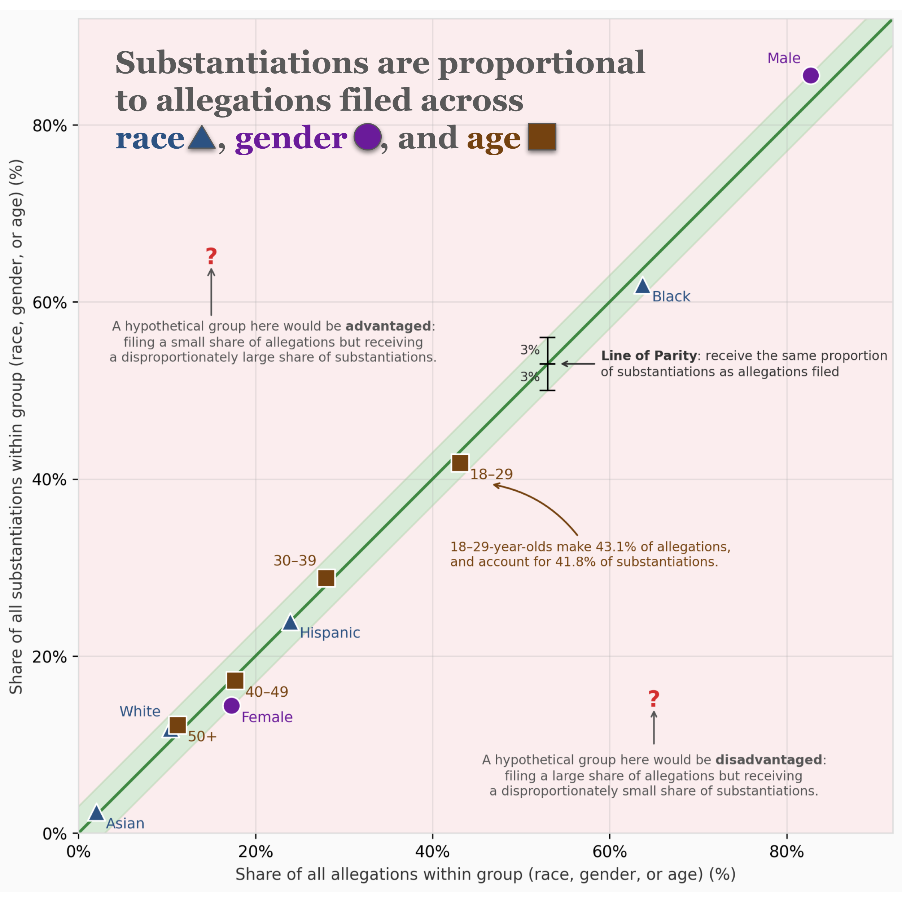
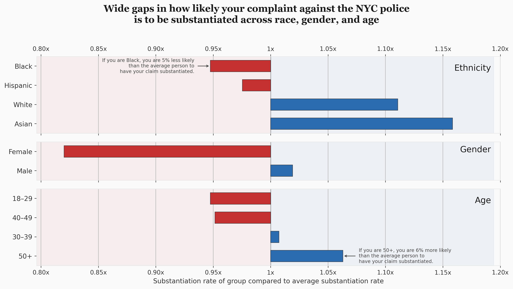

Proposition: Substantiation rates of NYC police complaints are relatively similar by complainant race, gender, or age.
FOR the Proposition

Design Decisions and Rationale (for each decision: earnest/deceptive score from −2 to +2, where −2 = fully deceptive, 0 = neutral, +2 = fully earnest):
- Parity line and ±3% band: The parity line (y=x) with a ±3% band (green = within band, red = outside) makes proportionality easy to read; groups on the line receive substantiations roughly in proportion to their allegations. Score: +1.
- Points colored by dimension; extended axis; no legend: Points are colored by dimension (race, gender, age) with distinct colors; axis limits are extended so all groups (including Male at ~83%) are visible, and no legend is used to reduce clutter. Score: +1.
- Disadvantaged/advantaged region annotations: Hypothetical “disadvantaged” and “advantaged” regions are annotated with red question marks and explanatory text (with vertical arrows) so readers learn how to interpret points off the line; this both makes use of the red space outside the band of parity and helps create the sense that everything within the band is fairer. Score: −0.5.
Why this visualization. By comparing each group’s share of substantiation judgements to its share of complaints filed, the chart uses a large graphical space and a narrow “fair” band; showing that all points fall inside that band delivers a clear message that substantiation is proportional to complaint volume. That framing suggests that differences in rates or ratios by group are largely explained by who files complaints, rather than by bias in outcomes. Other encodings (e.g. bar plots) were tried, but this one felt the most effective at communicating the for message: it still uses rhetorical choices (e.g. the band, the red “off-parity” regions), but they feel less heavy-handed because the reader gets enough structure to interpret what they see. A downside is that the chart demands some effort to interpret--readers must think through proportions, what parity means, and whether parity is the right notion of fairness.
AGAINST the Proposition

Design Decisions and Rationale (for each decision: earnest/deceptive score from −2 to +2, where −2 = fully deceptive, 0 = neutral, +2 = fully earnest):
- Ratio-to-mean scale (0.80x–1.20x): Using the rate compared to the average (instead of raw substantiation percentages) makes the axis numbers larger and easier to read and directly answers “how does this group compare to average?” A more honest approach would be to show the raw substantiation rate on the x-axis, but the differences there are small in absolute terms (on the order of 2–3%). Expressing values as multiples of the average widens the perceived gap. Visualizing bars as diverging from the mean exaggerates the sense of difference. That choice is partly deceptive: unless every group has the same value, you will always get bars diverging from the mean, and we partly mask how that works by using a multiplier instead of the raw rate--where diverging from something like 23% would look more obviously like an arbitrary reference. Score: −1.
- Faceting by dimension: Separate panels for Ethnicity, Gender, and Age keep each dimension readable and avoid crowding; the shared x-axis lets you compare groups cleanly across panels. Score: +1.
- Callout annotations (Black, 50+): Two annotations in plain language (“If you are Black, you are X% less likely…”; “If you are 50+, you are X% more likely…”) with arrows to the bars make the multiplier concrete for readers who don’t parse the scale. They help people interpret a complex takeaway in natural language in a personal way, framing it as how much more or less likely your complaint is to be substantiated depending on which group you belong to--which is a persuasive and somewhat deceptive way to present the finding. Score: −0.5.
Why this visualization. Early versions used bar plots based on raw proportions; they showed a difference but it didn’t feel large enough. I switched to diverging bars from the mean to emphasize that difference. The layout does a lot of work: with groups stacked vertically by ethnicity, gender, and age, bars that are technically in different panels still sit close together on the page, so the eye gets a strong sense of width--the long bar to the left for one group, the long bar to the right for another--and an overall impression of a wide spread. When you then read the numbers, the effect compounds: one group is well over 15% above average and another well over 15% below, just by group membership, so the delta feels substantial. The chart is built to make that gap feel big.
Final Reflection
I wanted to do something more interesting than standard tricks like cutting off axes, so what was tricky was thinking creatively about how to present a perspective in a way that felt earnest and even obvious. At first it was difficult to see what I could do: I felt I only had different groups (race, gender, age) and their substantiation rates. How was I supposed to reach different conclusions in a way that felt honest and interesting? I realized I could bring in other features that could seem to explain variation and make it appear as if rates did not vary--which I used in the “for” visualization (share of allegations vs. share of substantiations, parity band). In the “against” visualization I used what can seem like a reasonable way to present data: how things compare to a baseline. We are used to the language of “group X has a Y% higher or lower likelihood of Z than average,” so it can feel like a direct translation. I’m sure I could continue with other ways of calculating or framing the same data that play at the boundaries of judgment. Something like “similar” sounds like a simple descriptive claim--“X and Y are similar”--but there is a lot of work going on underneath, because there are many scales on which we might acceptably compare similarity, and they give different results. We could try to understand the nuances of why specific scales give different results, but that would be a lot of work.
In terms of “ethical analysis and visualization,” it seems to me that in this case both charts, for and against, would be better contextualized by another chart that shows the simplest version of the data: a plain bar chart of the percentage of complaints substantiated per group. To be honest, even with just the for and against visuals, it’s hard for me to square them. They both obscure a lot of information, and so it’s hard to build a single picture of the data that fits both. Presenting that simpler view alongside the persuasive ones would feel like the ethical move here--ethical as transparency. If we wanted to draw a distinction between acceptable persuasiveness and misleadingness, I’d put transparency at the center: persuasion would frame things in a way that makes the conclusion and how you reached it transparent, while misleading approaches would be intransparent. The catch is that the most effective misleading approaches give you the sense that they are transparent, in which case who is to say?